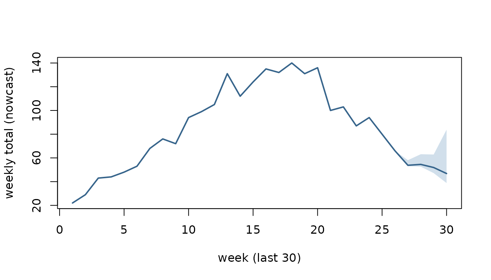

The pipeline: from incomplete counts to published numbers
Richard Aubrey White
Source:vignettes/pipeline.Rmd
pipeline.RmdSurveillance counts arrive late. A case that belongs to week
W may only be reported in week W,
W+1, W+2, and so on. So the newest weeks
always look lower than they will turn out to be. Anything you measure on
them — a trend, an intensity level, an alert — inherits that dip.
This vignette runs one series through the whole of
csalert. It fills in the weeks that are still arriving,
checks how far that filling can be trusted, and ends with numbers you
could publish.
Three shapes carry the run.
-
csfmt_reporting_triangle_v3— the input. One cell per reference week and reporting week, so it records what was reported when. -
csfmt_ensemble_v3— the working format. It holds$data, plus one matrix of Monte-Carlo$drawsper measure (rows = weeks, columns = simulations). Each stage adds columns to the draws, so the uncertainty is carried forward rather than recomputed. - a quantile collapse of those draws — the output,
optionally healed into
cstidy::csfmt_rts_data_v3for the usual plots and tables.
One rule: every stage takes the ensemble and returns it
That rule explains the shape of everything below.
Every analytical stage takes a
csfmt_ensemble_v3and returns acsfmt_ensemble_v3.ens_collapse()is terminal: it reduces the draws to quantiles, and a collapsed table is output, never input.
So the canonical pipeline is a single chain through the ensemble:
csfmt_reporting_triangle_v3
-> nowcast_quasipoisson_v1 OR nowcast_passthrough_to_ensemble_v1
-> [ens_add_rate] # when a denominator exists
-> [short_term_trend] # growth rate + P(increasing)
-> [mem_thresholds_v1] # MEM intensity
-> [signal_detection_hlm] # per-draw exceedance
-> ens_collapse(heal = TRUE) # ensemble -> quantiles -> csfmt_rts_data_v3The bracketed stages are optional and order-flexible among
themselves; each one adds draw columns and hands the ensemble on. What
you cannot do is collapse and then carry on. A collapsed table holds
quantiles, not draws. Feed it back into short_term_trend()
and you cannot recover a per-draw trend or a P(increasing). That is by
design, not a gap — the draws are the uncertainty, and the collapse is
where you spend them.
The series below is synthetic, and it runs the whole chain:
- Nowcast — fill in the recent weeks that are still being reported.
- Validation — replay the method against what was known in the past.
- Reporting completion — read the reporting delay off the triangle itself.
- Rate — a nowcasted numerator over a nowcasted denominator, per draw.
- Short-term trend — the recent slope of that rate, per draw.
- MEM intensity — seasonal intensity thresholds, classified per draw.
- Signal detection — historical-limits exceedance, per draw.
-
Collapse — quantiles, healed into
cstidy::csfmt_rts_data_v3.
Stages 4 to 8 are the ensemble chain above. Stages 2 and 3 are not. They take the triangle, not the ensemble, because they ask about the reporting process rather than about the completed counts. Keep that split in mind. Anything that asks how the data arrives reads the triangle; anything that asks what the data says reads the ensemble.
When you set up a new indicator, run stage 3 first: it is
what supports the choice of max_delay that everything else
then uses.
library(data.table)
#>
#> Attaching package: 'data.table'
#> The following object is masked from 'package:base':
#>
#> %notin%
library(csalert)
#> csalert 2026.8.23
#> https://niphr.github.io/csalert/A synthetic reporting triangle
Real surveillance data arrives with a delay: a case with reference
week W may only be reported in week
W, W+1, W+2, and so on. The
generator below simulates a laboratory indicator from ISO week 2019-35
to 2024-18. That span is five winter seasons, which is what stages 6 and
7 need. It has a reporting speed-up built in at the start of ISO
year 2024. Stage 3 recovers that change from the triangle
alone.
It emits a numerator and a denominator: tests taken, and how many were positive. Simulating positives as a binomial conditional on the tests keeps the numerator a subset of the denominator, which is what makes their ratio a proportion. Two independent Poissons would not be. Each test carries one reporting delay, so a result and its test land in the same triangle cell.
set.seed() is called inside the generator, not
beside it. A seed set outside a function that is called more than once
leaves the second call running on a different stream. The resulting
Monte-Carlo noise reads as signal.
sim_reports <- function(first_ref = "2019-35",
last_ref = "2024-18",
delay_slow = c(0.45, 0.30, 0.15, 0.07, 0.03),
delay_fast = c(0.70, 0.20, 0.06, 0.03, 0.01),
seed = 1L) {
set.seed(seed) # pinned inside, see above
weeks <- cstime::dates_by_isoyearweek$isoyearweek
i0 <- match(first_ref, weeks)
i1 <- match(last_ref, weeks)
rows <- lapply(i0:i1, function(ri) {
ref <- weeks[ri]
s <- cos(2 * pi * (cstime::isoyearweek_to_isoweek_n(ref) - 5) / 52) # winter peak
n_tests <- rpois(1, 400 + 120 * s)
positive <- rbinom(n_tests, 1, stats::plogis(-2.2 + 1.1 * s)) # subset of tests
p <- if (cstime::isoyearweek_to_isoyear_n(ref) <= 2023) delay_slow else delay_fast
data.table(
isoyearweek_reference = ref,
isoyearweek_reporting = weeks[ri + sample(0:4, n_tests, TRUE, p)],
positive = positive
)
})
# "today" is the last reference week: drop what has not been reported yet, so
# the most recent weeks are still incomplete -- the problem a nowcast solves
rbindlist(rows)[isoyearweek_reporting <= weeks[i1]]
}
reports <- sim_reports()
triangle_long <- reports[, .(numerator = sum(positive), denominator = .N),
by = .(isoyearweek_reference, isoyearweek_reporting)]
triangle_long[, `:=`(indicator_tag = "lab_flu", location_code = "nation",
age = "total", sex = "total")]
head(triangle_long, 4)
#> isoyearweek_reference isoyearweek_reporting numerator denominator
#> <char> <char> <int> <int>
#> 1: 2019-35 2019-35 1 132
#> 2: 2019-35 2019-39 0 12
#> 3: 2019-35 2019-36 3 78
#> 4: 2019-35 2019-38 0 24
#> indicator_tag location_code age sex
#> <char> <char> <char> <char>
#> 1: lab_flu nation total total
#> 2: lab_flu nation total total
#> 3: lab_flu nation total total
#> 4: lab_flu nation total total
c(cells = nrow(triangle_long),
numerator_never_exceeds_denominator =
all(triangle_long$numerator <= triangle_long$denominator))
#> cells numerator_never_exceeds_denominator
#> 1215 1Wrap it as a csfmt_reporting_triangle_v3. The as-of
boundary is read from the data — it is the newest reporting week
present, not the system clock.
tri <- csfmt_reporting_triangle_v3(
triangle_long,
id_cols = c("indicator_tag", "location_code", "age", "sex"),
reference_col = "isoyearweek_reference",
reporting_col = "isoyearweek_reporting",
value_col = "numerator"
)
c(as_of = attr(tri, "as_of"),
newest_reporting_week = max(triangle_long$isoyearweek_reporting))
#> as_of newest_reporting_week
#> "2024-18" "2024-18"max_delay is the delay horizon used by stages 1 to 3
below. Stage 3 shows how to choose it from the data; 5 weeks is the
right answer for this series.
max_delay <- 5L1. Nowcast
Estimand. For each reference week, the total that
will have been reported at delays 0 .. max_delay - 1 — that
is, by the end of ISO week reference_week + max_delay - 1.
This is a horizon-capped total, not the eventual total.
Anything reported later than max_delay - 1 weeks is outside
the estimand, and no amount of nowcasting recovers it. Stage 3 is how
you check that the horizon is wide enough for the difference to be
small. For a settled week the quantity is already observed. For the most
recent weeks it is not, and the nowcast is a predictive distribution
over it.
nowcast_quasipoisson_v1() is a discriminative
(regression) engine. For each number of weeks a reference week has been
observed, it fits one regression on the settled weeks. That regression
is quasipoisson with an identity link, of the settled total on the
counts reported so far:
total ~ n[delay 0] + n[delay 1] + ... + n[delay h]R’s default intercept is present in that formula and is fitted. There
is no per-week magnitude parameter, so the recent weeks do not each
carry their own noisy level. Draws combine the fit’s parameter
uncertainty with a dispersion-matched negative binomial.
delay_window (default 26 weeks) restricts training to the
settled weeks within roughly that span. The partial-to-total mapping can
then follow a reporting regime that changes — as this series’ does.
denominator_col nowcasts a second measure alongside the
numerator, on the same draw axis. Stage 4 needs it: a rate is only
coherent if both its parts are completed in the same Monte-Carlo
world.
set.seed(2)
ens <- nowcast_quasipoisson_v1(tri, max_delay = max_delay, n_sim = 500,
denominator_col = "denominator")
ens
#> <csfmt_ensemble_v3> 245 rows | 1 series | draws: numerator_nowcasted, denominator_nowcastedCollapse the draws to a quantile summary. original is
the count reported so far; the settled weeks sit exactly on it, the
recent weeks are completed above it.
q <- ens_collapse(ens, probs = c(0.05, 0.5, 0.95))
tail(q[, .(isoyearweek, original,
lo = numerator_nowcasted_q05x0,
med = numerator_nowcasted_q50x0,
hi = numerator_nowcasted_q95x0)], 8)
#> isoyearweek original lo med hi
#> <char> <num> <num> <num> <num>
#> 1: 2024-11 100 100 100 100
#> 2: 2024-12 94 94 94 94
#> 3: 2024-13 69 69 69 69
#> 4: 2024-14 67 67 67 67
#> 5: 2024-15 50 50 50 61
#> 6: 2024-16 47 47 49 62
#> 7: 2024-17 43 43 46 57
#> 8: 2024-18 23 29 46 66The settled weeks are pinned to their observed total, so they have no band at all. Only the incomplete weeks at the right-hand edge carry one:
show <- tail(q, 30)
xs <- seq_len(nrow(show))
plot(xs, show$numerator_nowcasted_q50x0, type = "n",
ylim = range(show$numerator_nowcasted_q05x0, show$numerator_nowcasted_q95x0),
xlab = "week (last 30)", ylab = "weekly total (nowcast)")
polygon(c(xs, rev(xs)),
c(show$numerator_nowcasted_q05x0, rev(show$numerator_nowcasted_q95x0)),
col = grDevices::adjustcolor("steelblue", 0.25), border = NA)
lines(xs, show$numerator_nowcasted_q50x0, lwd = 2, col = "steelblue4")
Keep the reference weeks: the later stages index off them.
weeks <- cstime::dates_by_isoyearweek$isoyearweek
ref_weeks <- q$isoyearweek2. Validation: replay the method against the past
This stage and the next take the triangle, not the ensemble. They ask how the data arrives. That is a property of the reporting process, and it is destroyed the moment the delay axis is collapsed into weekly totals.
The triangle records when every count arrived. So you can reconstruct what was known at any past week and replay the engine against it, without a second dated extract.
That reconstruction is exact only for an append-only reporting system: one where a count, once filed, keeps its original reporting week forever. Real systems also issue retrospective corrections, delete records and reclassify cases. None of those leave a trace in the current triangle. A case reclassified last month looks as though it was always classified that way. Where such revisions matter, replay understates how much the published numbers actually moved. A dated archive of extracts is the only way to measure it.
nowcast_censor() does the rewind. It returns a
csfmt_reporting_triangle_v3 with every cell reported after
the given week dropped, and its as-of boundary moved back:
past <- nowcast_censor(tri, as_of = ref_weeks[length(ref_weeks) - 8L])
c(now = attr(tri, "as_of"), then = attr(past, "as_of"),
rows_now = nrow(tri), rows_then = nrow(past))
#> now then rows_now rows_then
#> "2024-18" "2024-10" "1215" "1175"nowcast_truth() supplies the target. It returns a
two-column data.table (reference, truth) of
each reference week’s total summed over delays
0 .. max_delay - 1, keeping only the weeks old enough for
that total to be settled. The newest weeks are absent by design: they
have no truth to be scored against yet.
truth <- nowcast_truth(tri, max_delay = max_delay)
tail(truth, 3)
#> reference truth
#> <char> <num>
#> 1: 2024-12 94
#> 2: 2024-13 69
#> 3: 2024-14 67
c(reference_weeks = length(ref_weeks), settled = nrow(truth))
#> reference_weeks settled
#> 245 241A method is any function
f(triangle) -> csfmt_ensemble_v3 with its own parameters
baked in. That one-argument contract is what lets engines with different
signatures be replayed and compared through the same harness.
method_qp <- function(x) nowcast_quasipoisson_v1(x, max_delay = max_delay, n_sim = 500)
as_of_weeks <- tail(ref_weeks, 30)nowcast_backtest() runs the replay and returns the raw
scored quantiles: one long row per reference x
as_of x horizon x quantile_level,
with the predicted value. horizon is weeks between the
reference week and the as-of week, so horizon 0 is the current,
least-observed week.
bt <- nowcast_backtest(
tri, method_qp,
max_delay = max_delay,
as_of_weeks = as_of_weeks,
horizons = 0:3,
probs = c(0.05, 0.25, 0.5, 0.75, 0.95),
seed = 1
)
head(bt, 4)
#> reference as_of horizon quantile_level predicted
#> <char> <char> <int> <num> <num>
#> 1: 2023-38 2023-41 3 0.05 24.00
#> 2: 2023-39 2023-41 2 0.05 19.00
#> 3: 2023-40 2023-41 1 0.05 14.00
#> 4: 2023-41 2023-41 0 0.05 22.95
nrow(bt)
#> [1] 600nowcast_evaluate_v1() wraps that replay and scores it,
joining each forecast to its settled truth. It returns one row per group
(default: per horizon) per method:
-
n— the number of scored forecasts behind that row. -
coverage_50,coverage_90— the measured share of settled truths that fell inside the nominal 50% and 90% central intervals on this replay. These are sample quantities, not a property of the construction. -
median_signed,median_abs,q05,q95,p_gt_25,p_gt_50— the revision of the published median relative to the settled truth, as a fraction of the truth.median_signedis the median signed relative revision across the replayed forecasts, not a mean, so it is not the bias in the usual expected-error sense.p_gt_25andp_gt_50are empirical exceedance proportions: the share of replayed forecasts whose absolute relative revision exceeded 0.25 and 0.50. They are not probabilities of anything.
Passing a named list of methods replays every method
over the same reference and as-of weeks, so the comparison is paired
by forecast unit. seed makes each method’s
own run reproducible. It does not by itself create common random numbers
across methods; that would need the algorithms to consume compatible
variates. Here it cannot:
nowcast_passthrough_to_ensemble_v1() draws no random
numbers at all. Racing against it — it does no completion and just
republishes the counts reported so far — makes the numbers readable:
ev <- nowcast_evaluate_v1(
tri,
methods = list(
quasipoisson = method_qp,
passthrough = function(x) nowcast_passthrough_to_ensemble_v1(x, max_delay = max_delay)
),
max_delay = max_delay,
as_of_weeks = as_of_weeks,
horizons = 0:3,
seed = 1
)
ev[, .(method, horizon, n, coverage_50, coverage_90, median_signed, median_abs)]
#> method horizon n coverage_50 coverage_90 median_signed median_abs
#> <char> <int> <int> <num> <num> <num> <num>
#> 1: quasipoisson 3 29 1.000 1.000 0.0000 0.0161
#> 2: quasipoisson 2 28 0.893 1.000 0.0039 0.0371
#> 3: quasipoisson 1 27 0.630 0.963 0.0448 0.0660
#> 4: quasipoisson 0 26 0.346 0.692 0.1421 0.1937
#> 5: passthrough 3 29 0.310 0.310 -0.0100 0.0100
#> 6: passthrough 2 28 0.036 0.036 -0.0594 0.0594
#> 7: passthrough 1 27 0.000 0.000 -0.1544 0.1544
#> 8: passthrough 0 26 0.000 0.000 -0.3842 0.3842Read that table as a measurement on this sample and no further. Each row rests on 26 to 29 scored weeks of one synthetic series. That is far too few to characterise either engine. A coverage estimate from 26 scored weeks has a standard error of roughly 0.06 at 0.9 and 0.10 at 0.5. That is before any dependence between overlapping windows is allowed for.
What the comparison does show is the shape of the problem. What construction guarantees for the passthrough is only this: each of its forecasts is no greater than the settled truth. A count that is still arriving cannot exceed its own total. Every individual revision is therefore zero or negative.
That alone does not force a strictly negative median at a
given horizon. If more than half the weeks were already complete, the
median would be exactly zero. It also does not order the horizons. The
negative median_signed at all four horizons, and horizon 0
being the worst, are findings on this sample, not consequences of the
construction.
Its coverage_50 and coverage_90 are equal
because a single draw gives it no interval at all. The “interval” is a
point. It covers the truth only when the republished count already
equals it. At horizon 3 that happens on the weeks where nothing arrived
at delay 4.
The engine’s horizon-0 row is worth stopping on
The quasipoisson engine’s horizon-0 coverage is well below nominal,
and its median_signed is positive — it is
over-completing. That is not a random dip. The replay window above ends
at the as-of week, so it straddles the reporting speed-up this series
has at the start of ISO 2024. The engine trains on the 26 preceding
settled weeks. Learn the completion factors of a slow regime, then apply
them to partial counts from a fast one. You scale up counts that were
already nearly complete.
The contrast is visible if the replay is restricted to as-of weeks that sit entirely inside the slow regime:
slow_weeks <- tail(ref_weeks[cstime::isoyearweek_to_isoyear_n(ref_weeks) == 2023], 30)
c(from = slow_weeks[1], to = slow_weeks[length(slow_weeks)])
#> from to
#> "2023-23" "2023-52"
nowcast_evaluate_v1(tri, method_qp, max_delay = max_delay,
as_of_weeks = slow_weeks, horizons = 0:3, seed = 1)[
, .(horizon, n, coverage_50, coverage_90, median_signed, median_abs)]
#> horizon n coverage_50 coverage_90 median_signed median_abs
#> <int> <int> <num> <num> <num> <num>
#> 1: 3 30 1.000 1.000 0.0000 0.0000
#> 2: 2 30 0.933 1.000 0.0000 0.0596
#> 3: 1 30 0.833 1.000 0.0665 0.0909
#> 4: 0 30 0.533 0.867 0.1056 0.1909Horizon 0 recovers, and the bias changes sign. Read that as a
demonstration of the mechanism, not as a measured effect size. The two
windows also differ in which weeks and which part of the season they
cover. A sample of 26 to 30 scored weeks cannot separate those from the
regime change. The general lesson is the one delay_window
exists for: a nowcast engine is only as current as the reporting
behaviour it was trained on. Stage 3 is how you find out when
that behaviour moved.
nowcast_estimate_calibration_v1() reports the same
per-horizon coverage alongside an interval-scaling factor learned from
the replay. Its documentation is explicit that this is an empirical
rescaling and not split conformal, so the factor carries no
finite-sample coverage guarantee.
3. Reporting completion: how fast does the data actually arrive?
What pct_delayD counts
pct_delay0 is the share of a reference week’s
cases that were reported during that same ISO week. Delay 0 is
the reference week itself, not the week after it. In general:
pct_delayDis the pooled share of a reference week’s cases reported by the end of ISO weekreference_week + D.
The columns are indexed by delay, 0-based, so the
index in the name is the delay it reports. There are
max_delay of them and the highest is
pct_delay<max_delay - 1>, matching the triangle’s own
delay axis. Each is the delay ECDF read at one delay, with no
interpolation. mean_delay is on the same axis and in whole
weeks, so a week whose cases all arrive at delay 0 has
mean_delay 0, not 1.
A triangle with a known answer settles it. Below, each reference week generates exactly 50 at delay 0, 30 at delay 1 and 20 at delay 2. The result is right-truncated at the newest reporting week, the way real data is:
i <- match("2023-01", weeks)
pin <- data.table(
isoyearweek_reference = weeks[i + rep(0:29, each = 3)],
isoyearweek_reporting = weeks[i + rep(0:29, each = 3) + rep(0:2, 30)],
numerator = rep(c(50, 30, 20), 30),
indicator = "pinned", location = "nation", age = "total", sex = "total"
)
pin <- pin[isoyearweek_reporting <= weeks[i + 29]]
tri_pin <- csfmt_reporting_triangle_v3(
pin, id_cols = c("indicator", "location", "age", "sex")
)
reporting_completion_v1(tri_pin, max_delay = 3)[
, .(n_settled, mean_delay, complete_by_md, pct_delay0, pct_delay1, pct_delay2)]
#> n_settled mean_delay complete_by_md pct_delay0 pct_delay1 pct_delay2
#> <int> <num> <num> <num> <num> <num>
#> 1: 28 0.7 1 50 80 100pct_delay0 is 50, not 80: it is the delay-0 share, the
reports that arrived in the reference week itself.
pct_delay1 is 80 — cumulative through delay 1.
mean_delay is
0*0.50 + 1*0.30 + 2*0.20 = 0.70.
Coming from an older script? These columns used to
be named pct_w1, pct_w2, …, which counted
weeks-observed from 1. So no number in a column name ever equalled the
delay it stood for. Your pct_w1 is now
pct_delay0, pct_w2 is pct_delay1,
and so on. The old names are gone rather than redefined, so old code
errors on a missing column instead of quietly returning a different
week.
n_settled is 28, not 30. Age eligibility is the first
filter. A reference week is eligible once
as_of_week - reference_week >= max_delay - 1, which
excludes the two most recent of those 30. A second filter then drops any
eligible week whose total within the horizon is zero, and
n_settled counts what survives both. Here no week is empty,
so the age rule alone accounts for the number — and the same holds on
the working triangle:
age <- match(attr(tri, "as_of"), weeks) - match(ref_weeks, weeks)
completion <- reporting_completion_v1(tri, max_delay = max_delay)
c(age_eligible = sum(age >= max_delay - 1L), reported = completion$n_settled)
#> age_eligible reported
#> 241 241They agree only because this series has no zero-count weeks. On an
indicator with quiet weeks — a rare pathogen, a small stratum —
n_settled will be the smaller of the two. A period slice
with fewer than three surviving weeks is dropped from the output
entirely.
A worked reference week
Take reference week 2023-07. cstime
gives its calendar dates, and the two weeks after it:
cstime::dates_by_isoyearweek[
isoyearweek %in% c("2023-07", "2023-08", "2023-09"),
.(isoyearweek, isoyear, mon, thu, sun)
]
#> isoyearweek isoyear mon thu sun
#> <char> <int> <Date> <Date> <Date>
#> 1: 2023-07 2023 2023-02-13 2023-02-16 2023-02-19
#> 2: 2023-08 2023 2023-02-20 2023-02-23 2023-02-26
#> 3: 2023-09 2023 2023-02-27 2023-03-02 2023-03-05For a case whose reference week is 2023-07:
| statistic | covers reports up to | which is |
|---|---|---|
pct_delay0 |
end of ISO week 2023-07 | Sunday 2023-02-19 |
pct_delay1 |
end of ISO week 2023-08 | Sunday 2023-02-26 |
pct_delay2 |
end of ISO week 2023-09 | Sunday 2023-03-05 |
So pct_delay0 is a statement about the seven days from
Monday 2023-02-13. pct_delay1 is about the
14 days from that same Monday, not the seven days of
week 2023-08 on their own. The columns are cumulative.
Which day of the week you run it on
The day of the week does not change the delay arithmetic at all. Delay is computed from the two ISO-week labels only. So every day of a week carries the same label and lands in the same delay bucket:
days <- seq(as.Date("2023-02-13"), as.Date("2023-02-19"), by = "day")
data.table(date = days, weekday = weekdays(days),
isoyearweek = cstime::date_to_isoyearweek_c(days))
#> date weekday isoyearweek
#> <Date> <char> <char>
#> 1: 2023-02-13 Monday 2023-07
#> 2: 2023-02-14 Tuesday 2023-07
#> 3: 2023-02-15 Wednesday 2023-07
#> 4: 2023-02-16 Thursday 2023-07
#> 5: 2023-02-17 Friday 2023-07
#> 6: 2023-02-18 Saturday 2023-07
#> 7: 2023-02-19 Sunday 2023-07Both runs put a report filed that week at delay 0 for reference week 2023-07, at delay 1 for 2023-06, and so on. Nothing in the pipeline reads the system clock: the as-of boundary comes from the newest reporting week present in the data.
The phrase present in the data carries a condition worth
stating. as_of is max(reporting_week). A
Monday run and a Friday run therefore agree on
as_of = "2023-07" under one condition. The Monday
extract must already contain at least one report filed in week
2023-07.
If it contains none — a plausible Monday morning on a slow indicator
— as_of silently falls back to "2023-06".
Every week’s age shifts by one, and one more reference week is treated
as settled. That is a different analysis, not a smaller one, and nothing
in the output announces it.
What the day does change is how much of the current week’s reporting has landed. On Monday almost none of it has landed. In this illustration all of it is in by Sunday. That assumes the extract is taken after the week closes, and that the system files everything within the week it belongs to. Neither is guaranteed in general.
In a Monday extract every cell whose reporting week is the current week is still filling. That is the delay-0 cell of the current reference week most visibly. The same holds for the delay-1 cell of last week, the delay-2 cell of the week before, and so on.
That matters for the completion table in one narrow place, and it is worth being precise about which. Thin the current week’s reports down to 15%, as a Monday extract would see them, and rebuild:
set.seed(5)
monday <- reports[isoyearweek_reporting != attr(tri, "as_of") | runif(.N) < 0.15]
tl_mon <- monday[, .(numerator = sum(positive), denominator = .N),
by = .(isoyearweek_reference, isoyearweek_reporting)]
tl_mon[, `:=`(indicator_tag = "lab_flu", location_code = "nation",
age = "total", sex = "total")]
tri_mon <- csfmt_reporting_triangle_v3(
tl_mon, id_cols = c("indicator_tag", "location_code", "age", "sex")
)
rbind(
cbind(extract = "Sunday (week complete)",
reporting_completion_v1(tri, max_delay = max_delay)[
, .(n_settled, mean_delay, pct_delay0, pct_delay1, pct_delay2, pct_delay3)]),
cbind(extract = "Monday (15% of the week in)",
reporting_completion_v1(tri_mon, max_delay = max_delay)[
, .(n_settled, mean_delay, pct_delay0, pct_delay1, pct_delay2, pct_delay3)])
)
#> extract n_settled mean_delay pct_delay0 pct_delay1
#> <char> <int> <num> <num> <num>
#> 1: Sunday (week complete) 241 0.88 47.3 76.7
#> 2: Monday (15% of the week in) 241 0.88 47.3 76.7
#> pct_delay2 pct_delay3
#> <num> <num>
#> 1: 90.6 97.1
#> 2: 90.6 97.1The pooled curve barely moves, and n_settled is
identical, because the current reference week is never in the settled
set. For any max_delay of 2 or more its age is 0, which is
below the max_delay - 1 threshold. So it contributes
nothing to pct_delayD whichever day you run on. (A
max_delay of 1 leaves a single delay bucket, no completion
to measure, and no useful summary; use 2 or more).
At most one reference week can have its settled
total affected: the newest settled one. Its last delay cell — delay
max_delay - 1 — is still being reported during the current
week. Every older week finished reporting earlier; every newer week is
not settled. Count the weeks that actually moved, rather than assuming
it is one:
cmp <- merge(nowcast_truth(tri, max_delay), nowcast_truth(tri_mon, max_delay),
by = "reference", suffixes = c("_sunday", "_monday"))
cmp[(.N - 2):.N]
#> Key: <reference>
#> reference truth_sunday truth_monday
#> <char> <num> <num>
#> 1: 2024-12 94 94
#> 2: 2024-13 69 69
#> 3: 2024-14 67 67
cmp[truth_sunday != truth_monday]
#> Key: <reference>
#> Empty data.table (0 rows and 3 cols): reference,truth_sunday,truth_mondayOn this series, none did — and the reason is worth seeing, because it bounds the whole effect. The only cell at risk is the delay-4 numerator of the newest settled week. In the fast 2024 regime, delay 4 carries 1% of a week’s tests:
newest_settled <- weeks[match(attr(tri, "as_of"), weeks) - (max_delay - 1L)]
triangle_long[isoyearweek_reference == newest_settled &
isoyearweek_reporting == attr(tri, "as_of"),
.(isoyearweek_reference, isoyearweek_reporting, numerator, denominator)]
#> isoyearweek_reference isoyearweek_reporting numerator denominator
#> <char> <char> <int> <int>
#> 1: 2024-14 2024-18 0 3Five tests, none of them positive. Thinning zero positives leaves
zero, so the numerator’s settled total cannot move. The weekday
effect is bounded by the mass sitting in the last delay bucket.
Widen max_delay past where reporting actually finishes and
that bucket empties. That is why the effect vanishes here, and why it
did not vanish on a series with a heavier tail.
None of this generalises, and the two reasons it vanishes
here are both about scale. The at-risk cell is one week’s last
delay bucket, diluted into a pool of 241 settled weeks. That bucket is
also nearly empty, because max_delay is wide enough. Shrink
the series, shrink the horizon, or give the indicator a heavier
reporting tail, and the same mechanism becomes material. A period slice
with the minimum three qualifying weeks gives that one cell a third of
the weight.
The general statement is the conditional one. A mid-week extract
undercounts the newest settled week’s total by whatever share of its
last delay bucket has not arrived. That total is what
nowcast_truth() scores a backtest against. So run the
backtest off an end-of-week extract. The alternative is to measure the
gap on your own series, rather than assuming it is as small as it is
here.
“As of today”, for the weeks on screen
With as_of = 2024-18 and max_delay = 5, the
reference weeks split three ways:
data.table(
isoyearweek = ref_weeks,
weeks_observed = age + 1L,
status = fifelse(age >= max_delay - 1L, "settled",
fifelse(age > 0L, "still filling", "current week"))
)[, .N, keyby = status]
#> Key: <status>
#> status N
#> <char> <int>
#> 1: current week 1
#> 2: settled 241
#> 3: still filling 3Four weeks are not settled: three still filling, plus the current week, which has only its delay-0 reports. Those are the weeks the nowcast in stage 1 completed, and the weeks the completion table declines to learn from. The completed weeks are the ones whose nowcast rises above the count reported so far:
q[numerator_nowcasted_q95x0 > original, isoyearweek]
#> [1] "2024-15" "2024-16" "2024-17" "2024-18"Reporting drift: period = "year"
period = "year" returns one row per qualifying
ISO year, and it is how you see a reporting system speeding up
or slowing down. One pooled curve cannot: it averages the regimes
together and describes neither.
“Qualifying” is load-bearing. A period slice needs at least three settled weeks with a non-zero within-horizon total. A slice below that is dropped from the result, with no warning and no placeholder row. A year at the edge of the series — the one your data starts or ends in — is the usual casualty. A missing year means too few weeks, never zero delay.
reporting_completion_v1(tri, max_delay = max_delay, period = "year")[
, .(period, n_settled, mean_delay, pct_delay0, pct_delay1, pct_delay2, pct_delay3)]
#> period n_settled mean_delay pct_delay0 pct_delay1 pct_delay2 pct_delay3
#> <char> <int> <num> <num> <num> <num> <num>
#> 1: 2019 18 0.96 44.4 73.5 89.4 96.4
#> 2: 2020 53 0.95 44.2 75.0 89.8 96.3
#> 3: 2021 52 0.92 45.5 75.6 89.8 97.0
#> 4: 2022 52 0.90 45.1 76.0 91.4 97.2
#> 5: 2023 52 0.95 44.4 74.5 89.0 97.0
#> 6: 2024 14 0.49 67.7 89.1 95.7 98.8That is the change built into sim_reports(), recovered
from the triangle. Five consecutive ISO years sit within a couple of
points of each other — pct_delay0 around 43 to 45,
mean_delay around 0.95. Then 2024 steps to about 69% and
0.45. A flat run followed by a step is what a genuine regime change
looks like. A single year out of line with its neighbours is usually
noise.
The pooled row from the previous table reports
pct_delay0 of 47.3. That is close to the five slow years
only because they outnumber the fast one five to one. It is not a
compromise between the regimes. It is the old regime with a little
contamination, and it will drift year by year as 2024 accumulates
weeks.
The stratification is by ISO year, not calendar year, and the ISO year of a week is the calendar year of its Thursday. That decides which year owns a boundary week:
cstime::dates_by_isoyearweek[
isoyearweek %in% c("2022-52", "2023-01"), .(isoyearweek, isoyear, mon, thu, sun)
]
#> isoyearweek isoyear mon thu sun
#> <char> <int> <Date> <Date> <Date>
#> 1: 2022-52 2022 2022-12-26 2022-12-29 2023-01-01
#> 2: 2023-01 2023 2023-01-02 2023-01-05 2023-01-08ISO week 2022-52 has its Thursday on 2022-12-29, so it belongs to ISO year 2022 even though its Sunday, 2023-01-01, is a calendar-2023 date. ISO week 2023-01 has its Thursday on 2023-01-05 and belongs to 2023.
period = "month" slices finer and localises
when a change happened. It uses the same Thursday rule to
decide which calendar month owns a week that straddles two:
tail(reporting_completion_v1(tri, max_delay = max_delay, period = "month")[
, .(period, n_settled, mean_delay, pct_delay0, pct_delay1)], 6)
#> period n_settled mean_delay pct_delay0 pct_delay1
#> <char> <int> <num> <num> <num>
#> 1: 2023-10 4 0.83 51.0 76.0
#> 2: 2023-11 5 0.88 46.5 79.7
#> 3: 2023-12 4 1.02 43.8 71.2
#> 4: 2024-01 4 0.52 66.3 89.1
#> 5: 2024-02 5 0.48 67.4 89.0
#> 6: 2024-03 4 0.50 68.0 88.2The step lands between 2023-12 and 2024-01. Note the small
n_settled per month — four or five weeks — so a single
month’s row is noisy; read the sequence, not one row.
Every number here is conditional on max_delay
This is the trap, and it is structural rather than a tuning subtlety.
reporting_completion_v1() works from a triangle that has
already had every cell with delay >= max_delay
discarded. So the denominator is the total that arrived within the
horizon, not the eventual total. Two consequences follow, and they
hold whatever the real reporting tail looks like:
-
complete_by_mdis the last cumulative fraction of that same truncated total, so it is 1. - the last column,
pct_delay<max_delay - 1>, is that fraction as a percentage, so it is 100.
Neither can detect reporting that dribbles in past the horizon.
Rather than assert that, check it — here across max_delay 2
through 8 on this triangle, reading the last column by name each
time:
sens <- rbindlist(lapply(2:8, function(md) {
r <- reporting_completion_v1(tri, max_delay = md)
data.table(max_delay = md, n_settled = r$n_settled, mean_delay = r$mean_delay,
complete_by_md = r$complete_by_md,
last_col = paste0("pct_delay", md - 1L),
last_pct = r[[paste0("pct_delay", md - 1L)]],
pct_delay0 = r$pct_delay0, pct_delay1 = r$pct_delay1,
pct_delay2 = r$pct_delay2)
}), fill = TRUE)
sens
#> max_delay n_settled mean_delay complete_by_md last_col last_pct pct_delay0
#> <int> <int> <num> <num> <char> <num> <num>
#> 1: 2 244 0.38 1 pct_delay1 100 62.0
#> 2: 3 243 0.63 1 pct_delay2 100 52.4
#> 3: 4 242 0.79 1 pct_delay3 100 48.9
#> 4: 5 241 0.88 1 pct_delay4 100 47.3
#> 5: 6 240 0.89 1 pct_delay5 100 47.2
#> 6: 7 239 0.89 1 pct_delay6 100 47.1
#> 7: 8 238 0.89 1 pct_delay7 100 46.9
#> pct_delay1 pct_delay2
#> <num> <num>
#> 1: 100.0 NA
#> 2: 84.7 100.0
#> 3: 79.0 93.3
#> 4: 76.7 90.6
#> 5: 76.6 90.6
#> 6: 76.6 90.5
#> 7: 76.4 90.5
c(complete_by_md_always_1 = all(sens$complete_by_md == 1),
last_pct_always_100 = all(sens$last_pct == 100))
#> complete_by_md_always_1 last_pct_always_100
#> TRUE TRUEThe same holds inside every period slice, which is where it is easiest to mistake for a finding:
per <- rbindlist(lapply(c("all", "year", "month"), function(p) {
r <- reporting_completion_v1(tri, max_delay = max_delay, period = p)
data.table(period_arg = p, rows = nrow(r),
complete_by_md_all_1 = all(r$complete_by_md == 1),
pct_delay4_all_100 = all(r$pct_delay4 == 100))
}))
per
#> period_arg rows complete_by_md_all_1 pct_delay4_all_100
#> <char> <int> <lgcl> <lgcl>
#> 1: all 1 TRUE TRUE
#> 2: year 6 TRUE TRUE
#> 3: month 55 TRUE TRUEThe diagnostic that does work is the max_delay
sweep itself. Read the sens table above down its
rows. mean_delay rises from 0.38 at max_delay
2 to 0.88 at 5, then moves only to 0.89 at 8. pct_delay0
falls from 61.8 to 47.3 and then drifts to 46.8. That flattening is what
supports max_delay <- 5L here — it is a
sensitivity analysis, not a proof.
A mean_delay that kept climbing would be clear evidence
the tail was still being cut off. A plateau is weaker evidence in the
other direction, because a genuinely sparse tail and a shifting
settled-week composition both flatten the curve too.
Two cautions on reading that sweep:
- The short horizons are not merely imprecise, they are biased
optimistic.
pct_delay0atmax_delay2 reads 61.8% because it conditions on the cases that arrived within two weeks. That is a smaller denominator, so a larger share. - Not all of the residual movement past 5 is about the tail.
n_settledfalls from 244 to 238 across those rows, because a longer horizon settles fewer weeks. The weeks it drops are the newest, which on this series are the fast-reporting ones. That pulls the pooledpct_delay0down slightly on composition alone. Compare rows at equaln_settled, or readperiod = "year"instead, before calling a small drift a tail.
sim_reports() emits no delay beyond 4. So on
this triangle a horizon of 5 truncates nothing, and the
flattening really is exact — but only because we can read the generator.
On a real series that check is unavailable. Widen until
mean_delay stops moving, then treat the remaining tail as
bounded by what a still-wider horizon would have shown, not as zero.
4. Rate: a nowcasted numerator over a nowcasted denominator
From here on every stage takes the ensemble and returns the ensemble.
Estimand. The percentage of tests that were positive, per reference week. It is computed per draw, so it carries the uncertainty of both the numerator and the denominator. Collapsing first and dividing the medians would throw that away and give a ratio no draw ever produced.
Because draws are index-aligned across measures (column
j is the same Monte-Carlo world for every measure), the
division is element-wise:
ens <- ens_add_rate(ens,
numerator = "numerator_nowcasted",
denominator = "denominator_nowcasted",
per = 100)
names(ens$draws)
#> [1] "numerator_nowcasted"
#> [2] "denominator_nowcasted"
#> [3] "numerator_nowcasted_vs_denominator_nowcasted_pr100"The new measure’s name is built by the grammar, not pasted, so build it the same way rather than typing it out:
rate <- csfmt_var("numerator_nowcasted", denom = "denominator_nowcasted", per = 100)
rate
#> [1] "numerator_nowcasted_vs_denominator_nowcasted_pr100"
qr <- ens_collapse(ens, probs = c(0.05, 0.5, 0.95))
tail(qr[, .(isoyearweek,
positives = numerator_nowcasted_q50x0,
tests = denominator_nowcasted_q50x0,
pct_lo = round(get(csfmt_var(rate, q = 0.05)), 2),
pct = round(get(csfmt_var(rate, q = 0.50)), 2),
pct_hi = round(get(csfmt_var(rate, q = 0.95)), 2))], 6)
#> isoyearweek positives tests pct_lo pct pct_hi
#> <char> <num> <num> <num> <num> <num>
#> 1: 2024-13 69 433 15.94 15.94 15.94
#> 2: 2024-14 67 464 14.44 14.44 14.44
#> 3: 2024-15 50 452 10.46 11.11 13.33
#> 4: 2024-16 49 427 10.33 11.45 14.45
#> 5: 2024-17 46 387 10.39 11.98 15.21
#> 6: 2024-18 46 464 6.20 10.02 14.59Two guards are worth knowing about. A denominator of zero gives
NA, not a fabricated 0% that would read as a real drop. The
numerator is a subset of the denominator, so the rate is capped at
per. A draw that violated that cap would warn rather than
silently exceed 100%.
No warning appeared above, so no draw did. But the numerator and denominator here are nowcast independently, and nothing in the engine enforces coherence between them. On a series where the two are close, expect that warning.
5. Short-term trend on the rate
Estimand. The OLS slope of the completed
series over the last trend_isoyearweeks weeks, and that
slope as a percentage of the current level. This is a
descriptive quantity: a summary of the six numbers in
the window, not an estimate of a latent growth parameter. Read per draw,
it inherits exactly the uncertainty the nowcast put into those six
numbers, and no other.
Run the trend on the nowcast rather than on the reported counts. That is the point of the pipeline. The reported counts turn down at the right-hand edge simply because the reports have not arrived. A trend fitted to them reports a fall that is an artefact of reporting.
The method returns a slope, a growth rate and the fraction of draws
whose slope is positive. It does not return an
increasing / not-increasing classification; if you want one, you choose
the cut-off on that fraction yourself. (The
cstidy::csfmt_rts_data_v1 method of
short_term_trend() does return a status factor — a
different estimator, discussed at the end of this section).
The ensemble method fits, independently down every draw column, a
closed-form OLS straight line through that draw’s last
trend_isoyearweeks nowcasted counts. It adds two draw
matrices and one point column:
ens_trend <- short_term_trend(ens, measure = rate, trend_isoyearweeks = 6)
setdiff(names(ens_trend$draws), names(ens$draws))
#> [1] "numerator_nowcasted_vs_denominator_nowcasted_pr100_trend_beta1"
#> [2] "numerator_nowcasted_vs_denominator_nowcasted_pr100_trend_gr"
setdiff(names(ens_trend$data), names(ens$data))
#> character(0)-
..._trend_beta1— the OLS slope, in percentage points per week, per draw. -
..._trend_gr— the growth rate100 * slope / level, per draw, in percent of the current level per week. -
..._trend_increasing_pr— the share of draws with a positive slope. It is already a reduction over the draw axis, so it lives on$dataand is not collapsed.
Collapse as usual:
gr <- csfmt_var(rate, role = "trend", suffix = "_gr")
qt <- ens_collapse(ens_trend, probs = c(0.05, 0.5, 0.95))
trend <- qt[, .(isoyearweek,
gr = round(get(csfmt_var(gr, q = 0.50)), 2),
gr_lo = round(get(csfmt_var(gr, q = 0.05)), 2),
gr_hi = round(get(csfmt_var(gr, q = 0.95)), 2),
p_increasing = get(csfmt_var(rate, role = "trend",
suffix = "_increasing_pr")))]
tail(trend, 10)
#> isoyearweek gr gr_lo gr_hi p_increasing
#> <char> <num> <num> <num> <num>
#> 1: 2024-09 -2.19 -2.19 -2.19 0.000
#> 2: 2024-10 -4.39 -4.39 -4.39 0.000
#> 3: 2024-11 -6.25 -6.25 -6.25 0.000
#> 4: 2024-12 -6.21 -6.21 -6.21 0.000
#> 5: 2024-13 -10.75 -10.75 -10.75 0.000
#> 6: 2024-14 -11.74 -11.74 -11.74 0.000
#> 7: 2024-15 -17.56 -19.54 -12.25 0.000
#> 8: 2024-16 -19.52 -23.61 -12.60 0.000
#> 9: 2024-17 -13.43 -18.29 -7.53 0.000
#> 10: 2024-18 -10.00 -25.25 -2.26 0.012The last four rows are the nowcast weeks. Their point estimates are
negative and their 5-95% bands sit entirely below zero, with
p_increasing at 0. The series is on the spring side of its
winter peak, and the nowcast uncertainty is not wide enough to admit a
rise.
Note what that statement is and is not: it says the completed rate fell over each six-week window, given this nowcast. It does not say the fall will continue. It is conditional on the nowcast being right about the four weeks that are still filling. Stage 2 measured those weeks as the engine’s weakest point.
The settled weeks have no interval, and that is the right answer
Look at the rows above the nowcast weeks: gr_lo and
gr_hi equal gr, and p_increasing
is exactly 0 or 1. That is not a display artefact and it is not a
defect. Those windows lie entirely inside the settled weeks. There every
draw of the numerator and of the denominator is the same observed total,
so every draw of their ratio is too.
The six rates are known, so their OLS slope is a known
number, and the descriptive estimand has nothing left to be uncertain
about. p_increasing collapses to a sign
indicator on that one number — which is what a share-of-draws
becomes when all the draws agree. It is not a sign test, and no
inference is being performed. Measured rather than asserted:
settled_weeks <- truth$reference
tr_settled <- trend[isoyearweek %in% settled_weeks & !is.na(gr_lo)]
data.table(
settled_rows_with_a_full_window = nrow(tr_settled),
all_intervals_degenerate = all(tr_settled$gr_lo == tr_settled$gr_hi),
p_increasing_values = paste(sort(unique(tr_settled$p_increasing)), collapse = ", ")
)
#> settled_rows_with_a_full_window all_intervals_degenerate p_increasing_values
#> <int> <lgcl> <char>
#> 1: 236 TRUE 0, 1
propagate_slope_error = TRUE changes the estimand
short_term_trend() has an argument that gives the
settled weeks an interval. It is worth understanding what it actually
does, because it is not “adding the uncertainty the default forgot”.
propagate_slope_error = TRUE perturbs each draw’s slope
by se * t. Here se is the OLS standard error
of that window, and t is on
trend_isoyearweeks - 2 degrees of freedom. That quantity
only means something if you stop asking the descriptive question and
start asking a model-based one. The model-based
question is this: treat the six weekly counts as noisy observations
around a latent straight line, and report uncertainty about that line’s
slope. Switching to that question buys an interval, and commits you
to three assumptions:
- the underlying weekly mean is linear across the window;
- the deviations are independent across weeks;
- they are homoskedastic, with a
treference distribution.
None of the three holds for the series in this vignette.
sim_reports() draws tests from a Poisson and positives from
a binomial, both with a sinusoidal mean. So the window
mean is curved rather than linear, and the variance of the rate changes
with the level and with the number of tests. The interval below is
therefore a model-based perturbation, under assumptions the data
generator violates. It is informative about the sensitivity of the
slope, not a valid confidence statement about it.
Use the default when you want to describe what the completed series did. Reach for this one only when a latent linear trend is genuinely the thing you mean, and say so when you publish the interval:
set.seed(3)
ens_trend2 <- short_term_trend(ens, measure = rate, trend_isoyearweeks = 6,
propagate_slope_error = TRUE)
qt2 <- ens_collapse(ens_trend2, probs = c(0.05, 0.5, 0.95))
trend2 <- qt2[, .(isoyearweek,
gr = round(get(csfmt_var(gr, q = 0.50)), 2),
gr_lo = round(get(csfmt_var(gr, q = 0.05)), 2),
gr_hi = round(get(csfmt_var(gr, q = 0.95)), 2))]
tail(trend2, 10)
#> isoyearweek gr gr_lo gr_hi
#> <char> <num> <num> <num>
#> 1: 2024-09 -2.35 -6.38 1.35
#> 2: 2024-10 -4.33 -10.77 1.43
#> 3: 2024-11 -6.22 -9.82 -2.29
#> 4: 2024-12 -6.09 -10.11 -1.98
#> 5: 2024-13 -10.75 -15.60 -5.24
#> 6: 2024-14 -12.02 -17.87 -6.03
#> 7: 2024-15 -16.67 -26.32 -7.83
#> 8: 2024-16 -19.21 -25.34 -10.78
#> 9: 2024-17 -13.58 -22.22 -2.75
#> 10: 2024-18 -10.37 -29.96 0.13
c(degenerate_intervals_now = sum(trend2$gr_lo == trend2$gr_hi, na.rm = TRUE))
#> degenerate_intervals_now
#> 0Every row now has an interval, and p_increasing moves
off 0 and 1. Note what that costs: the settled weeks, whose counts are
known exactly, are now reported as uncertain. That is the change of
estimand made visible, not new information.
One practical trap on top of the assumptions. The degrees of freedom
are trend_isoyearweeks - 2, which is 4 at the width of 6
used here. At the function’s own default width of 3 it is 1 — a Cauchy.
The growth-rate quantiles then have no finite variance and very heavy
tails. Widen the window before you enable this.
This ensemble method is not the same estimator as
short_term_trend() on a
cstidy::csfmt_rts_data_v1. That one fits a quasi-Poisson
log-link model over a moving window and returns a factor status column
(increasing / notincreasing), following
Benedetti (2019); see ?short_term_trend. The ensemble
method here is an OLS slope. It was chosen because it is a fixed linear
filter, and so can be applied down 500 draw columns at once. The
csfmt_rts_data_v1 method is the pre-ensemble architecture
and is deprecated. New work SHOULD run
short_term_trend() on the ensemble, as above, before
ens_collapse().
Carry the trend ensemble forward — the chain continues from here:
ens <- ens_trend6. MEM intensity thresholds
Estimand. Which of five seasonal intensity levels this week’s rate falls in. The thresholds come from the same series’ own previous seasons, via the Moving Epidemic Method. Classification happens per draw, so the answer is a distribution over levels rather than one label.
This is the first stage that needs history, and a
lot of it. mem_thresholds_v1() needs complete prior seasons
to fit a season’s thresholds. min_seasons (default 2) is a
hard floor. prefer_seasons (default 5) is the depth below
which a fit is reported as provisional. A season needs
min_weeks_per_season (default 30) weeks to count as
training at all. It is the reason this vignette’s series starts in 2019
rather than last year.
ens <- mem_thresholds_v1(ens, measure = rate)
#> mem_thresholds_v1: 3 season(s) fit on < 5 training seasons (provisional); see mem_n_seasons.
tail(ens$data[, .(isoyearweek, mem_n_seasons, mem_preepidemic,
mem_medium, mem_high, mem_veryhigh)], 3)
#> isoyearweek mem_n_seasons mem_preepidemic mem_medium mem_high mem_veryhigh
#> <char> <int> <num> <num> <num> <num>
#> 1: 2024-16 4 17.05336 24.31637 27.181 28.55243
#> 2: 2024-17 4 17.05336 24.31637 27.181 28.55243
#> 3: 2024-18 4 17.05336 24.31637 27.181 28.55243The message is not noise to skip past. It says some
seasons were fit on fewer than prefer_seasons training
seasons, and mem_n_seasons records how many each one
actually got. Thresholds fit on two seasons are worth much less than
thresholds fit on five, and this is where you find out which you
have.
The classification arrives as per-level probabilities after the collapse:
qm <- ens_collapse(ens, probs = 0.5)
pcols <- grep("_status_prob_", names(qm), value = TRUE)
intensity <- qm[, c("isoyearweek", pcols), with = FALSE]
setnames(intensity, pcols, sub(".*_status_prob_", "", pcols))
tail(intensity, 6)
#> isoyearweek preepidemic low medium high veryhigh
#> <char> <num> <num> <num> <num> <num>
#> 1: 2024-13 1.00 0.00 0 0 0
#> 2: 2024-14 1.00 0.00 0 0 0
#> 3: 2024-15 1.00 0.00 0 0 0
#> 4: 2024-16 1.00 0.00 0 0 0
#> 5: 2024-17 1.00 0.00 0 0 0
#> 6: 2024-18 0.99 0.01 0 0 0Some weeks belong to a season with no thresholds — the early seasons,
which have no prior seasons to learn from. Those weeks get
NA for every draw and are not classified at all:
status <- ens$draws[[csfmt_var(rate, role = "status")]]
c(weeks = nrow(status),
weeks_with_no_threshold = sum(apply(status, 1, function(r) all(is.na(r)))))
#> weeks weeks_with_no_threshold
#> 245 100A real influenza series would also want exclude_seasons.
It keeps anomalous seasons — a pandemic year, a season with a data gap —
out of the training baseline. Thresholds are still estimated
for an excluded season; only the baseline they are fit on
changes.
7. Signal detection: historical limits
Estimand. Whether this week’s rate exceeds what the
same calendar week has looked like in previous years — the
historical-limits method. The baseline is the mean and standard
deviation of the same week (plus or minus one) across
baseline_isoyears prior years. The threshold is its 99.5th
percentile. Every draw is compared against that threshold, so the output
is an exceedance probability, not a yes/no flag.
The default baseline_isoyears = 5 needs five full years
of history before the first week can be classified. This series is
shorter than that, so it uses three, which is the kind of trade every
new indicator faces:
ens <- signal_detection_hlm(ens, measure = rate, baseline_isoyears = 3)
qh <- ens_collapse(ens, probs = 0.5)
hcols <- grep("_hlmstatus_prob_", names(qh), value = TRUE)
signal <- qh[, c("isoyearweek", "hlm_threshold", hcols), with = FALSE]
setnames(signal, hcols, sub(".*_hlmstatus_prob_", "p_", hcols))
tail(signal, 6)
#> isoyearweek hlm_threshold p_null p_high
#> <char> <num> <num> <num>
#> 1: 2024-13 24.15171 1.000 0.000
#> 2: 2024-14 23.31266 1.000 0.000
#> 3: 2024-15 22.69595 1.000 0.000
#> 4: 2024-16 20.59243 1.000 0.000
#> 5: 2024-17 16.33812 0.988 0.012
#> 6: 2024-18 16.47576 0.980 0.020p_high is the share of draws above the threshold. It is
a statement about nowcast uncertainty — how likely the
completed rate exceeds the historical limit. It is not a p-value, a
posterior probability, or a false-alarm rate. The baseline itself is
estimated from the point history with no uncertainty attached, so
hlm_threshold is treated as known.
8. Collapse: the end of the chain
ens_collapse() reduces every draw matrix over the draw
axis into quantile columns, and every ordinal status matrix into
per-level probabilities. With heal = TRUE it hands the
result to cstidy::set_csfmt_rts_data_v3(), which adds the
standard calendar columns and returns a
csfmt_rts_data_v3.
final <- ens_collapse(ens, probs = c(0.05, 0.5, 0.95), heal = TRUE)
class(final)
#> [1] "csfmt_rts_data_v3" "data.table" "data.frame"
c(rows = nrow(final), cols = ncol(final))
#> rows cols
#> 245 52
tail(final[, .(isoyearweek, isoyear, isoweek, season, seasonweek)], 3)
#> isoyearweek isoyear isoweek season seasonweek
#> <char> <int> <int> <char> <num>
#> 1: 2024-16 2024 16 2023/2024 34
#> 2: 2024-17 2024 17 2023/2024 35
#> 3: 2024-18 2024 18 2023/2024 36This is where the pipeline ends.
csfmt_rts_data_v3 is a presentation and storage format:
plots, tables, reports. It is not an analysis substrate, and there is no
route back. The draws are gone, so a per-draw trend, a MEM class
probability or an exceedance probability computed after this point is
not available. Everything that needs draws must happen before the
collapse, which is why stages 4 to 7 are all upstream of it.
On storage, one caveat worth stating plainly: csdb
currently ships table validators for csfmt_rts_data_v1 and
v2 only. There is no v3 validator yet, so
writing a healed v3 to a database is not something this pipeline can do
today.
The naming grammar
Measure columns are built from structured components rather than ad-hoc string pasting, so downstream code routes on parsed parts instead of hard-coded names:
<measure>[_vs_<denom>][_<role>][_<q-coord> | _prob_<level>][_pr<per>][<suffix>]
csfmt_var("numerator", role = "nowcasted", q = 0.5)
#> [1] "numerator_nowcasted_q50x0"
csfmt_parse("numerator_nowcasted_q50x0")
#> $measure
#> [1] "numerator"
#>
#> $role
#> [1] "nowcasted"
#>
#> $q
#> [1] 0.5csfmt_parse() is not the inverse of
csfmt_var(). It strips coordinates right to left and
matches a role against a fixed vocabulary. So it cannot tell which of
several role-looking segments was the role. The package’s own rate name
is a case where it gets the denominator wrong:
nm <- csfmt_var("numerator_nowcasted", denom = "denominator_nowcasted", per = 100)
nm
#> [1] "numerator_nowcasted_vs_denominator_nowcasted_pr100"
csfmt_parse(nm)$denom
#> [1] "denominator"The denominator’s own _nowcasted was consumed as the
role, so "denominator" comes back instead of
"denominator_nowcasted". Treat the parse as reliable for
single-role names such as numerator_nowcasted_q50x0. Check
the result when a measure or denominator itself ends in a role word.
q_label() and q_value() map a probability
to and from its column label. They are likewise not a clean inverse
pair. q_label() holds one decimal-percent digit and exactly
two integer-percent digits. So a finer probability is rounded, and
p = 1 produces a three-digit label that
q_value() cannot read back.
Where next
- Run the chain on several series at once. Every stage above is
written over the
time_series_idaxis, so a triangle with many locations or age groups flows through unchanged. The seam masking in the trend and the per-series MEM fits are already handled. -
nowcast_passthrough_to_ensemble_v1()substitutes for the engine at stage 1 when an indicator SHOULD NOT be nowcast-completed. Everything downstream is identical, so an indicator can opt out of nowcasting without opting out of the pipeline. -
reporting_completion_trend_v1()wraps stage 3’s year and month slices into one table with ascopecolumn. -
nowcast_estimate_calibration_v1()turns a long replay into a per-horizon interval-width scaling factor, as a diagnostic on an engine. - The
cstidy::csfmt_rts_data_v1methods ofshort_term_trend()andsignal_detection_hlm()are the older generation and are deprecated. No vignette runs them; their help pages carry the only worked examples.vignette("csalert", package = "csalert")explains what replaced them.